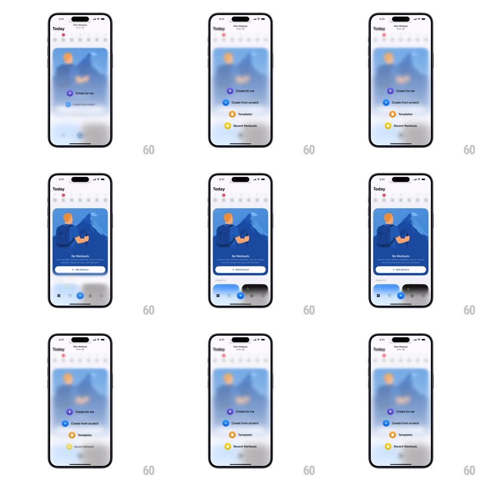

Media
Frame-by-frame

Rebuild this interaction 1:1: Whistle's plus menu - tapping the blue + in the tab bar blurs the Today screen and springs up four quick actions ("Create for me", "Create from scratch", "Templates", "Recent Workouts") staggered from the button; tapping anywhere collapses them back.

Rebuild this interaction 1:1: Whistle's plus menu - tapping the blue + in the tab bar blurs the Today screen and springs up four quick actions ("Create for me", "Create from scratch", "Templates", "Recent Workouts") staggered from the button; tapping anywhere collapses them back.
## Integration
Integration: stack-agnostic spec - springs given as stiffness/damping, timed motions as duration + curve; map every value to your framework and animation library of choice.
## Scene
Light Today screen: week strip, an illustration card ("No Workouts" with "+ Add Workout"), and a tab bar with a central blue + button. Open state: the whole screen blurs (20px) and dims; four rows float above the +, each a colored circular icon (purple sparkles, blue pencil, orange grid, yellow clock) with a label.
## Motion spec
Pattern: staggered FAB menu, ~450ms.
- Open: the + rotates 45deg into an X (250ms, spring ~380/20) as the background blurs (250ms) and scales to 0.97.
- Items: each row springs up from the +'s center (spring ~340/20, 350ms), 60ms apart, bottom item first, rising ~56px per slot with a fade.
- Close: rows collapse in reverse order (40ms stagger) back into the button, which rotates back; the blur clears (250ms).
- Tap a row: the row flashes (120ms), the menu collapses, and the destination pushes in.
## Calibration
- Rows rise from the button, not from the screen edge - the origin point is the +.
- The blur and the first row start together.
## Reduced motion
The menu fades in as a group (250ms) over a dim without blur.
## Don't miss
- Bottom-first stagger is the natural reading order here - do not reverse it.
- The + stays in the tab bar; the menu floats above it, not over a sheet.